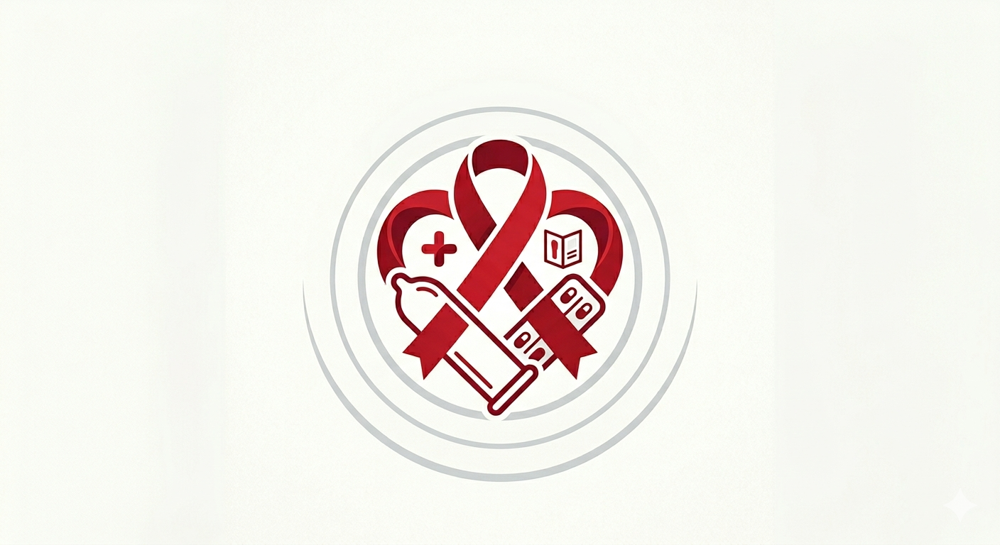
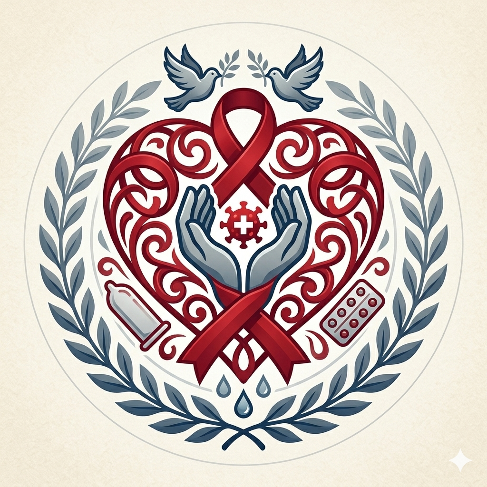
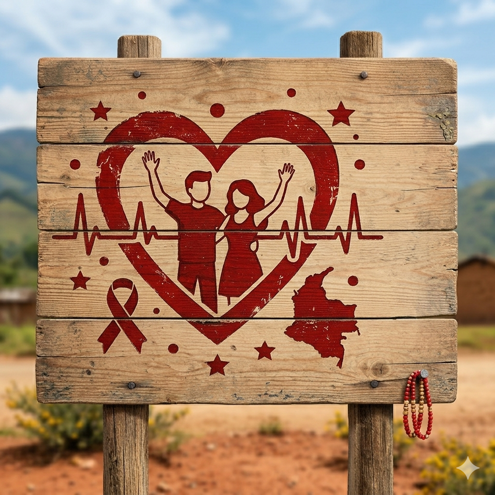
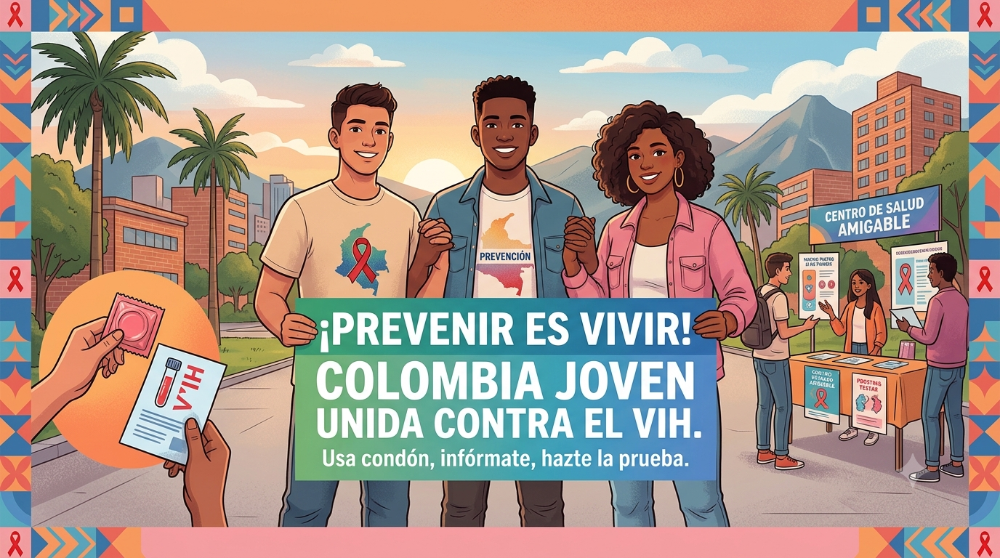
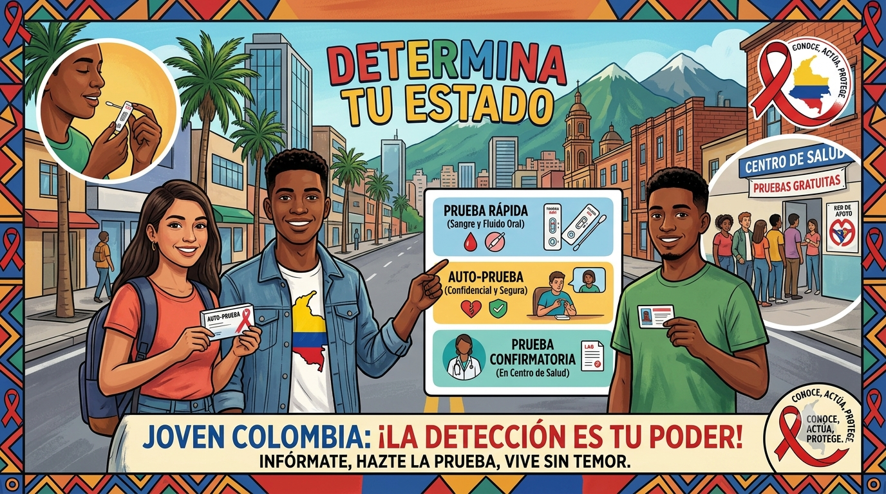
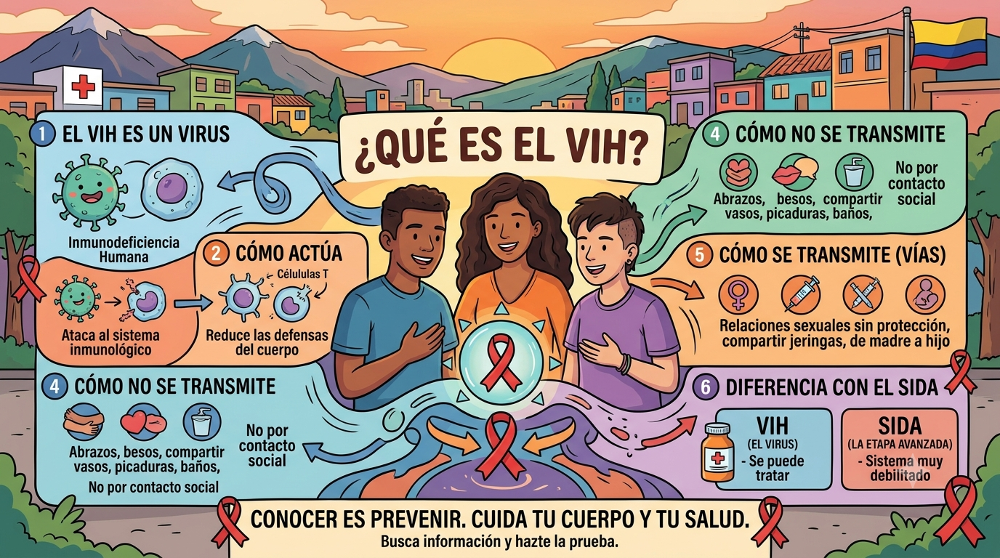
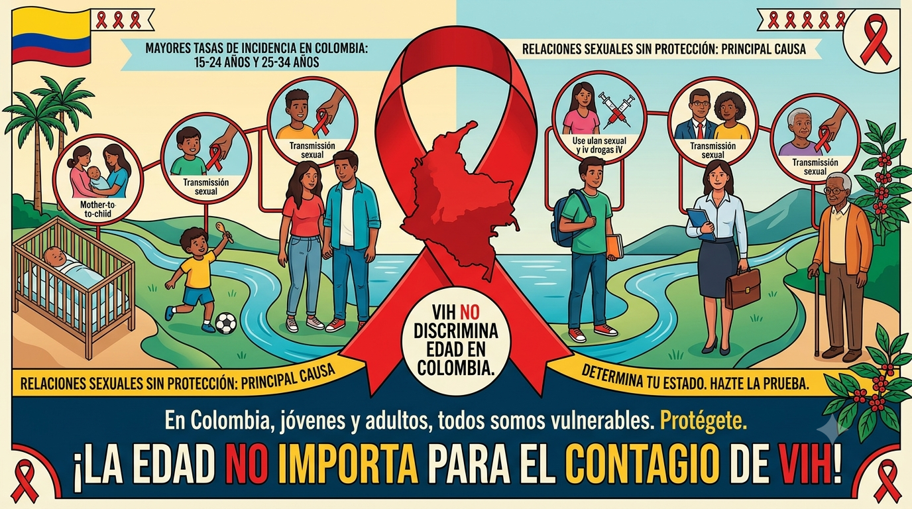
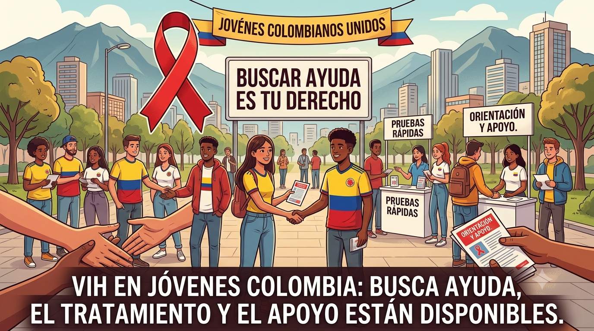
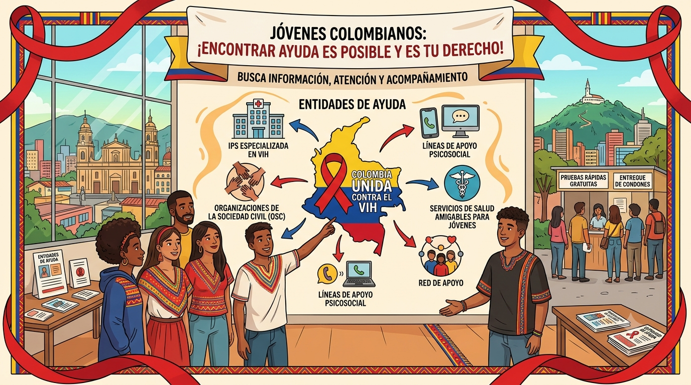
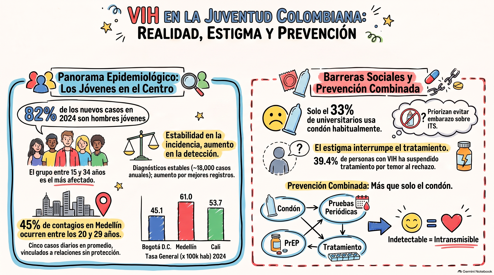

El VIH no define a las personas, el respeto sí. Conoce más
PREVENCIÓN ES VIDA
Pedir ayuda es un acto de valentía y cuidado. busca ayuda

VOCES DE REFLEXIÓN
Hablo desde mi vida: tengo VIH, tengo sueños y merezco respeto.. Ver testimonios
¿Qué debe saber del VIH?
El VIH, todo lo que deben saber los jovenes colombianos
¿Qué es el VIH?
El VIH es el virus de la inmunodeficiencia humana. Ataca las células CD4 del sistema inmunitario, debilita las defensas del cuerpo y se transmite por sangre, semen, fluidos vaginales, rectales y leche materna; sin tratamiento, puede avanzar a sida.
¿Cómo prevenir?
Se previene usando condón en las relaciones sexuales, no compartiendo agujas y considerando PrEP o PEP si hay riesgo de exposición. También ayuda hacerse pruebas de VIH e ITS con regularidad.

formas de deteccion
Se detecta con pruebas de sangre, saliva u orina, pero las más usadas son las de anticuerpos, antígeno/anticuerpo y ácido nucleico (NAT). Las de antígeno/anticuerpo suelen detectar el VIH antes que las de solo anticuerpos

Tratamiento Antirretroviral (ARV)
El tratamiento antirretroviral (ARV o TAR) es una combinación de medicamentos que controla el VIH, reduce la carga viral y ayuda a mantener el sistema inmunitario fuerte. No cura la infección, pero debe tomarse de forma continua y lo antes posible tras el diagnóstico; también puede reducir mucho el riesgo de transmisión.
testimonios
Los testimonios sobre el VIH ayudan a visibilizar experiencias reales, romper estigmas y promover la empatía hacia quienes viven con este diagnóstico.
Dayana - 23 años: "Me diagnosticaron VIH hace ocho años. Al principio pensé que mi vida había terminado. Lloraba todos
los días. Pero empecé el tratamiento, me apoyé en mi familia y hoy tengo una vida completamente
normal. Trabajo, tengo pareja, salgo de viaje. El VIH no me define. Lo que me define es que no me
rendí."
D
Dayana, 23 años Bogotá, Usaquen
Andres - 30 años: "Supe que era VIH positivo a los 21 años, durante una prueba de rutina. Fue un shock enorme. Sentí
vergüenza, miedo al rechazo. Pero encontré un grupo de apoyo que cambió todo. Hoy soy
indetectable, llevo mi tratamiento al día y me dedico a informar a otros jóvenes. Nadie debería vivir esto
solo."
A
Andres, 30 años Medellin
Carlos - 45 años: "Mi esposa falleció hace años por complicaciones del SIDA porque no sabía que tenía el virus. Yo
también me infecté, pero a tiempo me detectaron y comencé el tratamiento. Quiero que la gente pierda el miedo y se haga la prueba. Detectarlo a tiempo lo cambia
todo."
C
Carlos, 45 años Bogotá, chapinero
Video de informacion
Este video te da la informacion del VIH para tu cuidado y prevencion
Galeria de informacion
imagenes de prevencion, campañas y cuidado contra el VIH

🔍

🩺

🧬

💉

🩹

💊
Entidades de ayuda
Aqui encontraras entidades con las cuales puedes afrontar el VIH
Terapia antirretroviral (TAR)
El tratamiento estándar para personas con VIH incluye una combinación de tres medicamentos de al menos dos clases diferentes de antirretrovirales. Este régimen se toma de forma continua y, cuando se sigue correctamente, reduce la carga viral a niveles indetectables, lo que significa que el virus no se transmite por vía sexual y la persona puede vivir una vida larga y saludable.
Profilaxis preexposición (PrEP)
Para personas sin VIH pero con riesgo de contraerlo, existe la PrEP, un medicamento preventivo que reduce el riesgo de infección en aproximadamente un 99% cuando se toma según lo indicado.
Importancia del diagnóstico temprano y la adherencia
El diagnóstico temprano y el inicio inmediato del TAR son clave para reducir la mortalidad relacionada con el sida y prevenir la transmisión del virus. La adherencia estricta al tratamiento es fundamental para evitar la farmacorresistencia, especialmente a fármacos como el dolutegravir.
Tratamientos inyectables de larga duración
Además de las pastillas diarias, existen opciones inyectables que se administran cada uno o dos meses, lo que facilita la adherencia al tratamiento. En 2026 se están desarrollando nuevos antirretrovirales experimentales que podrían administrarse solo dos veces al año.

Salud pública · Colombia
El VIH en Colombia, en cifras y en contexto
Un recorrido por los datos oficiales más recientes sobre el VIH en el país: quiénes se ven afectados, dónde, cómo se transmite y qué está funcionando para prevenirlo.
211.431
personas con diagnóstico de VIH reportadas en Colombia al 31 de octubre de 2025
14.169
nuevos casos reportados a enero de 2025, una cifra estable frente a años anteriores
40,5
años: edad promedio de las personas diagnosticadas
Tendencia
Los nuevos diagnósticos se han estabilizado
El total acumulado de personas diagnosticadas crece cada año porque se suman los casos nuevos a los ya existentes, pero el número de nuevos diagnósticos por año se mantiene relativamente estable desde 2023, según el Ministerio de Salud y la Cuenta de Alto Costo.
El Ministerio de Salud ha aclarado que el aumento del total acumulado de casos no representa un repunte de nuevas infecciones: refleja una mejor capacidad del país para detectar, reportar y dar tratamiento a quienes ya vivían con el virus.
Perfil demográfico
¿Quiénes viven con VIH en Colombia?
La mayoría de los casos se concentra en hombres jóvenes y adultos. Estos son los datos de sexo y del principal mecanismo de transmisión reportados por la Cuenta de Alto Costo.
Distribución geográfica
¿En qué regiones se concentran los casos?
Con corte al 31 de octubre de 2025, así se reparten las personas diagnosticadas por región del país.
Región Central (incl. Antioquia, Valle del Cauca)28,72%
Bogotá, D.C.22,19%
Región Caribe19,91%
Región Pacífica15,19%
Región Oriental12,40%
Amazonía-Orinoquía1,59%
Tratamiento
El tratamiento funciona y cada vez llega más rápido
27 días
tiempo promedio entre el diagnóstico y el inicio del tratamiento
72%
de las personas en tratamiento antirretroviral están indetectables
35,4%
de los nuevos diagnósticos ya inician con esquemas de primera línea (2025)
95%
meta de tamización de VIH en mujeres gestantes, cumplida a nivel nacional
Una persona en tratamiento antirretroviral que mantiene carga viral indetectable no transmite el virus por vía sexual: es el principio conocido como Indetectable = Intransmisible (I = I).
Prevención
Qué funciona para prevenir el VIH
Preservativo
Usado correctamente en cada relación sexual, reduce de forma muy significativa el riesgo de transmisión del VIH y de otras infecciones de transmisión sexual.
PrEP
La Profilaxis Preexposición está disponible en Colombia desde 2022 para personas con mayor exposición al virus, y ha contribuido a estabilizar los nuevos diagnósticos.
Prueba de VIH
Hacerse la prueba periódicamente permite un diagnóstico temprano: hoy en Colombia el tiempo entre diagnóstico e inicio de tratamiento es de solo 27 días en promedio.
Tratamiento como prevención
Iniciar y mantener el tratamiento antirretroviral no solo protege la salud de la persona diagnosticada: al lograr carga viral indetectable, también evita nuevas transmisiones.
Asistente
Resuelve tus dudas con el asistente
Pregúntale al asistente sobre las cifras de esta página, cómo se transmite el VIH o cómo prevenirlo.